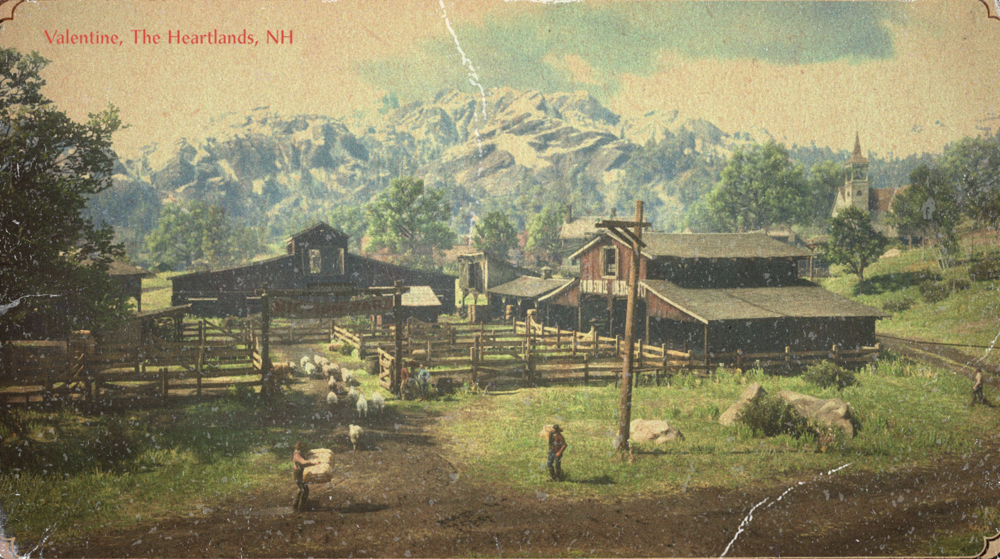
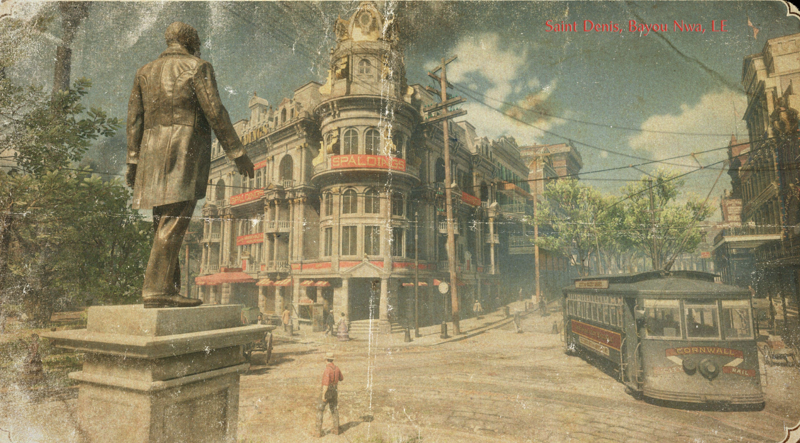
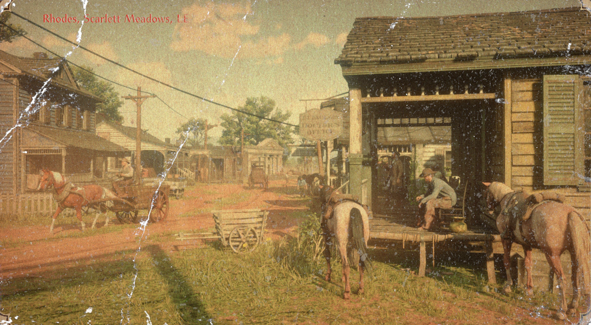
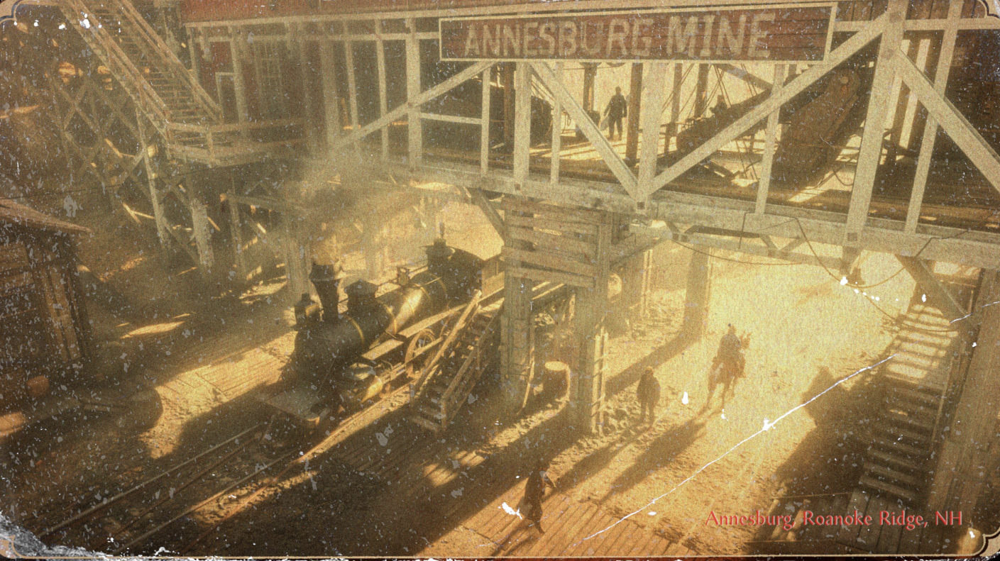

Pelimaailma
Red Dead Redemption II:n maailma on laaja ja monipuolinen, tarjoten pelaajille runsaasti tutkittavaa. Peli sijoittuu fiktiiviseen Yhdysvaltojen länteen vuonna 1899, jolloin villi länsi on alkanut hiipua ja modernisaatio on alkanut levitä. Pelaajat voivat tutkia erilaisia ympäristöjä, kuten metsiä, vuoria, aavikoita ja kaupunkeja, jotka on toteutettu yksityiskohtaisesti ja elävästi.
Paikat
Tässä on esitelty vain muutamia Red Dead Redemption II:n kaupungeista. Pelissä on paljon muitakin paikkoja ja alueita, joita pelaajat voivat tutkia.

Valentine
Pieni karjakaupunki, joka toimii tärkeänä kauppapaikkana alueella.

Saint Denis
Suuri teollinen kaupunki, jossa moderni elämä alkaa vallata villin lännen.

Rhodes
Eteläinen plantaasikaupunki, jossa kaksi perhettä taistelee vallasta.

Annesburg
Kaivoskaupunki pohjoisessa, jossa hiilikaivokset ja teollisuus hallitsevat elämää.